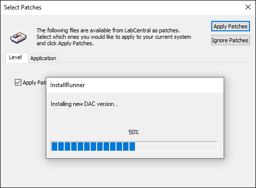

iTest User's Guide
The InstallRunner tool, available from LabAgent, acts as a standalone tool for running installer based patches when auto-patching is triggered on the test station. Once it is determined the running software is outdated on the test station, the InstallRunner tool will download and run any applicable installer files in order to update the running software. This process may take several minutes to complete.
InstallRunner - In-Progress

InstallRunner will check for the values of the following config.ini options to determine if the running software is outdated: TargetPatchVerDAC and TargetPatchVerLabAgent. These settings contain the targeted iTest and LabAgent versions recommended for the test system to be running.
If the target version is greater than the local version, then the target installer file will be downloaded and ran by InstallRunner. The target installer files (e.g., iTest44Setup.exe, LabAgentSetup.exe) are downloaded from the specified folder in the InstallerPatchPath config.ini setting. Any downloaded installer files will be stored in the $EXECUTEDIR\InstallerPatches folder until installation is complete.
The following command-line downloads any available installer patches from $InstallerPatchPath, then launches a child process to install them:
Syntax:
InstallRunner.exe
The following command-line runs the downloaded installers in silent mode:
Syntax:
InstallRunner.exe /install <filenames>
Parameters:
The following command-line can be used to quickly determine if installer patches are available:
Syntax:
InstallRunner.exe /checkforpatches
This command-line will return either a value of 0 or 1. A value of 0 indicates that there are no available installer patches. A value of 1 indicates that there are available installer patches.